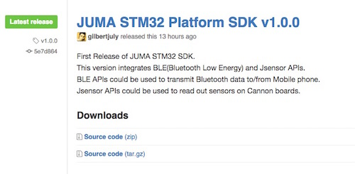
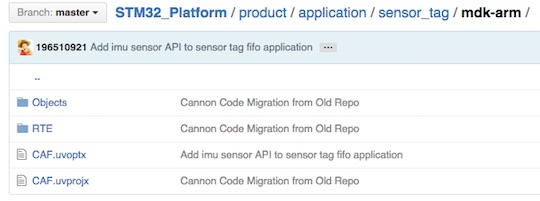
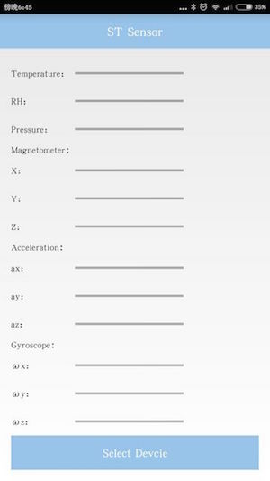
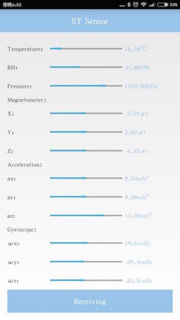

Cannon例程: SensorTag
概述¶
Cannon上板载了多个由意法半导体(ST)出品的传感器，包括加速度计/陀螺仪、磁力计、气压计、温湿度计。本例程讲述了如何通过SDK的JSensor API(传感器API接口)获取这些传感器的数据，以及如何通过BLE API(低功耗蓝牙API接口)将这些数据接收到手机。
获取嵌入式SDK及例程¶
下载最新的嵌入式SDK(发布版)：
https://github.com/JUMA-IO/STM32_Platform/releases
如JUMA STM32 Platform SDK v1.0.0：

如果您想获知最新的代码改动情况，请使用github的“watch”功能。
编译和烧写嵌入式软件¶
Step1. 打开样本工程：¶
x:/Cannon/product/application/sensor_tag/mdk-arm/CAF.uvproj

Step2. 编译工程¶

Step3. 烧写软件¶

手机安装ST_SENSOR APP¶
有两种方式可以安装“ST_SENSOR”APP：
第一种方式：使用Android的APK文件，该文件位于SDK的tools目录下：
x:/Cannon/tools/STSensor.apk
将该文件传送到Android手机，直接安装便可。
如果您不知道如果将APK安装至手机，请参阅这篇文章。
第二种方式：如果您熟悉Android开发环境，可以使用“ST_SENSOR APP”的源码来安装。“ST_SENSOR”APP的源码位于：
https://github.com/JUMA-IO/BLE_SensorTag_Android
和手机APP通信¶
Step1. 打开手机的蓝牙功能¶

Step2. 运行“ST_SENSOR”APP¶
打开后的界面如下：

Step3. 和Cannon通信¶
点击“Select Device”按钮，它会搜索周围的Cannon，点击设备进行连接，之后结果如下：

可以看到，Cannon将板载的传感器采样得到的数据传送到了APP上。
阅读代码¶
本例中的嵌入式代码位于：
x:/Cannon/product/application/sensor_tag/app.c
代码量很少，已配有注释，非常方便阅读。
如果您对其中的BLE APIs和JSensor APIs有所疑问，请查阅相应的API说明：
http://www.juma.io/doc/zh/embedded_api/guide/